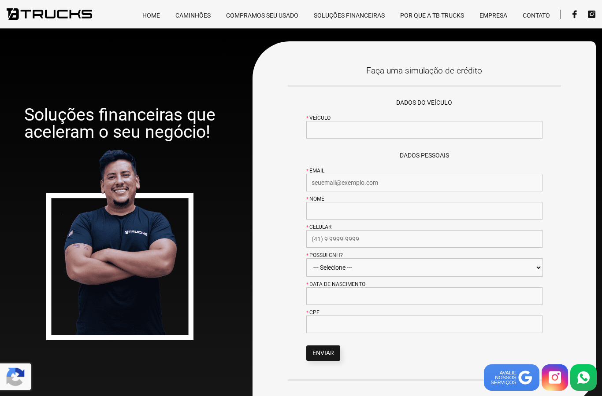
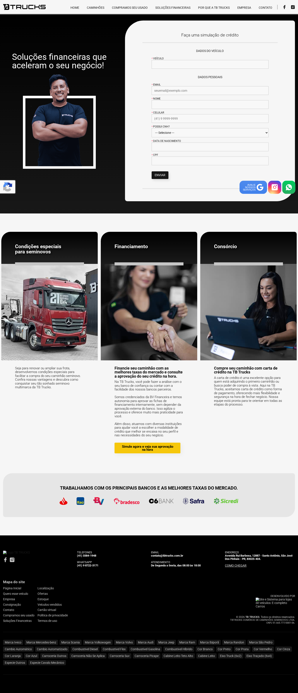

Sistema de Investigação de Marca e Identidade Online
https://www.tbtrucks.com.br/financiamento
Prioridade: HIGH · Cenário: C_POSSIBLE_OFFICIAL_CHANNEL · Revisão humana: PENDING
A página pertence a uma revenda legítima de caminhões (TB Trucks), operando em contexto multibancos. Contudo, há uso de logotipo legado descontinuado da BV Financeira (B vermelho e V azul) e texto ambíguo que alega 'autonomia para aprovar internamente sem depender do banco', além da omissão dos avisos formais de correspondente bancário (Res. CMN 4.935/2021). Classifica-se como comunicação ambígua com necessidade de revisão. [Revisor: DOWNGRADE] Trata-se de uma revenda de caminhões que atua como correspondente em contexto multibancos. Não há apropriação indevida de canal oficial nem overbranding dominante na página inicial/cabeçalho que justifique STRONG_INDICATION. Contudo, há alegações operacionais potencialmente enganosas sobre a concessão de crédito pelo BV ('autonomia para aprovação interna sem o banco'), uso de logotipo antigo descontinuado e ausência dos avisos formais de correspondente bancário e canais de ouvidoria. Aplica-se DOWNGRADE para REVIEW_REQUIRED com prioridade MEDIUM.
Regiões dos screenshots comparadas com a referência da logo descontinuada (B vermelho sobre V azul), sem uso de IA.
| Screenshot | Posição (x, y) | Tamanho | Similaridade | Imagem |
|---|---|---|---|---|
| E-SHOT-FULL | 428, 2278 | 49×35 px | 0.91 | https://www.tbtrucks.com.br/images/financial/bv.png |


| Ref | Tipo | Local | Conteúdo |
|---|---|---|---|
| E-VIS-LEGACY-001 | visual | page | Comparação de imagem (determinística, sem IA): logotipo ANTIGO de Banco BV (B vermelho sobre V azul) em E-SHOT-FULL, posição x=428 y=2278, 49x35px, similaridade 0.91; imagem: https://www.tbtrucks.com.br/images/financial/bv.png |
| E-URL | domain | url | URL final: https://www.tbtrucks.com.br/financiamento (domínio: www.tbtrucks.com.br) |
| E-SHOT-VIEWPORT | screenshot | viewport | evidence/C88604b5d04/attempt-1/viewport.png (sha256 1a88460c19101fde…) |
| E-SHOT-FULL | screenshot | page | evidence/C88604b5d04/attempt-1/fullpage.png (sha256 558fa27f346af8d1…) |
| E-TITLE | title | head | Financiamento de Caminhões Usados | TB Trucks |
| E-META-1 | meta | head | description: Financie seu próximo caminhão com nossos bancos parceiros e encontre as melhores taxas para financiar seu caminhão seminovo |
| E-META-2 | meta | head | og:site_name: TB TRUCKS |
| E-META-3 | meta | head | og:title: Financiamento de Caminhões Usados | TB Trucks |
| E-META-4 | meta | head | og:description: Financie seu próximo caminhão com nossos bancos parceiros e encontre as melhores taxas para financiar seu caminhão seminovo |
| E-META-5 | meta | head | application-name: App TB TRUCKS |
| E-CANONICAL | meta | head | https://www.tbtrucks.com.br/financiamento |
| E-HEAD-1 | heading | page | Soluções financeiras que aceleram o seu negócio! |
| E-HEAD-2 | heading | page | Faça uma simulação de crédito |
| E-HEAD-3 | heading | page | Condições especiais para seminovos |
| E-HEAD-4 | heading | page | Financiamento |
| E-HEAD-5 | heading | page | Consórcio |
| E-HEAD-6 | heading | page | TRABALHAMOS COM OS PRINCIPAIS BANCOS E AS MELHORES TAXAS DO MERCADO. |
| E-FOLD | text | viewport (acima da dobra) | HOME CAMINHÕES COMPRAMOS SEU USADO SOLUÇÕES FINANCEIRAS POR QUE A TB TRUCKS EMPRESA CONTATO | Soluções financeiras que aceleram o seu negócio! Faça uma simulação de crédito Dados do Veículo Veículo Dados Pessoais Email Nome Celular Possui CNH? Data de Nascimento CPF Enviar |
| E-FTR | text | footer | TELEFONES (41) 3384-1948 WHATSAPP (41) 9 8722-3171 EMAIL contato@tbtrucks.com.br ATENDIMENTO De Segunda a Sexta, das 08:00 às 18:00 ENDEREÇO Avenida Rui Barbosa, 12887 - Santo Antônio, São José Dos Pinhais - PR, 83025-404. COMO CHEGAR |
| E-NAV | nav | header | <https://www.tbtrucks.com.br/> | HOME <https://www.tbtrucks.com.br/> | CAMINHÕES <https://www.tbtrucks.com.br/search/ordenacao.recentes> | COMPRAMOS SEU USADO <https://www.tbtrucks.com.br/avaliacao> | SOLUÇÕES FINANCEIRAS <https://www.tbtrucks.com.br/financiamento> | POR QUE A TB TRUCKS <https://www.tbtrucks.com.br/pagina/por-que-a-tb-trucks> | EMPRESA <https://www.tbtrucks.com.br/empresa> | CONTATO <https://www.tbtrucks.com.br/contato> | Visite: Facebook <https://www.facebook.com/tbtrucksoficial> | Visite: Instagram <https://www.instagram.com/tb.trucks> |
| E-CTA-1 | cta | page | ENVIAR |
| E-CONTACT-1 | contact | nav | Visite: Facebook <https://www.facebook.com/tbtrucksoficial> |
| E-CONTACT-2 | contact | nav | Visite: Instagram <https://www.instagram.com/tb.trucks> |
| E-CONTACT-3 | contact | footer | Visite: Facebook <https://www.facebook.com/tbtrucksoficial> |
| E-CONTACT-4 | contact | footer | Visite: Instagram <https://www.instagram.com/tb.trucks> |
| E-CONTACT-5 | contact | page | Siga-nos no Instagram <https://instagram.com/tb.trucks> |
| E-IMG-1 | image | nav (acima da dobra) | imagem alt='Logo TB TRUCKS' src=https://www.tbtrucks.com.br/images/logos/logo.svg (196x29, acima da dobra) |
| E-IMG-2 | image | page | imagem alt='BV' src=https://www.tbtrucks.com.br/images/financial/bv.png (49x35, abaixo da dobra) |
| E-IMG-3 | image | footer | imagem alt='Logo TB TRUCKS' src= (123x16, abaixo da dobra) |
| E-TXT-001 | text | page | Na TB Trucks, você pode fazer a análise com o seu banco de confiança ou contar com a facilidade dos nossos bancos parceiros. |
| E-TXT-002 | text | page | Somos credenciados da BV Financeira e temos autonomia para aprovar as fichas de financiamento internamente, sem depender da aprovação externa do banco. Isso agiliza o processo e oferece muito mais praticidade para você. |
| E-TXT-003 | text | page | TRABALHAMOS COM OS PRINCIPAIS BANCOS E AS MELHORES TAXAS DO MERCADO. |
| E-TXT-004 | text | page | TELEFONES |
| E-TXT-005 | text | page | |
| E-TXT-006 | text | page | ATENDIMENTO |
| E-TXT-007 | text | page | ENDEREÇO |
| Dimensão | Sinal | Achado | Refs |
|---|---|---|---|
| VISUAL_IDENTITY | CONFUSION | Presença da identidade visual legada/antiga da BV (B vermelho e V azul) na seção de instituições parceiras. | E-VIS-LEGACY-001 E-IMG-2 E-SHOT-FULL |
| DECLARED_COMMERCIAL_IDENTITY | LEGITIMATE | A empresa divulga sua própria marca (TB Trucks), endereço físico e CNPJ no rodapé do site. | E-TITLE E-IMG-1 E-FTR E-SHOT-FULL |
| CORRESPONDENT_TRANSPARENCY | CONFUSION | Não apresenta a qualificação formal de correspondente bancário independente nem informa a Ouvidoria do banco contratante. | E-TXT-001 E-TXT-002 E-FTR |
| INSTITUTIONAL_LANGUAGE | CONFUSION | Afirma autonomia decisória de crédito interna desvinculada da aprovação bancária externa, contrariando o fluxo padrão de correspondente. | E-TXT-002 |
| LOGO_USAGE | CONFUSION | Uso de logotipo descontinuado do Banco BV / BV Financeira. | E-VIS-LEGACY-001 E-IMG-2 |
| SERVICE_JOURNEY | NEUTRAL | Formulário de captação de dados para simulação de financiamento veicular mantido pela própria loja de caminhões. | E-FOLD E-SHOT-VIEWPORT |
| CONTACT_CHANNELS | LEGITIMATE | Canais de contato próprios da loja (telefone, WhatsApp comercial e endereço em São José dos Pinhais/PR). | E-FTR E-SHOT-FULL |
| CONSUMER_CONFUSION | CONFUSION | A alegação de aprovação direta sem depender do banco combinada ao logo antigo pode induzir o cliente a erro sobre a natureza da intermediação. | E-TXT-002 E-IMG-2 |
A página pertence a uma revenda legítima de caminhões (TB Trucks), operando em contexto multibancos. Contudo, há uso de logotipo legado descontinuado da BV Financeira (B vermelho e V azul) e texto ambíguo que alega 'autonomia para aprovar internamente sem depender do banco', além da omissão dos avisos formais de correspondente bancário (Res. CMN 4.935/2021). Classifica-se como comunicação ambígua com necessidade de revisão.
Nenhum CNPJ ou razão social identificáveis no conteúdo coletado.
| Tipo | Valor | Ref | Contexto |
|---|---|---|---|
| domain | tbtrucks.com.br | E-URL | |
| contato@tbtrucks.com.br | E-FTR | ||
| social_profile | https://www.facebook.com/tbtrucksoficial | E-NAV | |
| social_profile | https://www.instagram.com/tb.trucks | E-NAV | |
| social_profile | https://instagram.com/tb.trucks | E-CONTACT-5 | |
| trade_name | TB TRUCKS | E-META-2 | |
| phone | (41) 3384-1948 | E-FTR |
Mapeamento indicativo para apoio à auditoria. Não constitui conclusão regulatória; a decisão definitiva pertence à auditoria.
Fonte: NORMATIVE
Art. 14. O contrato de correspondente deve estabelecer: [...] II - vedação à utilização, pelo contratado, de logomarca ou de outros atributos que sejam similares aos adotados pela instituição contratante em suas agências, postos de atendimento, sítio eletrônico na internet, aplicativo ou outras plataformas de comunicação em rede;
Hipótese: Uso de logomarca, uso excessivo/desproporcional ou de atributos similares aos adotados pela contratante em seus canais. A norma disciplina correspondentes contratados; o responsável não foi identificado como correspondente.
Evidência observada: E-IMG-2 E-SHOT-FULL E-VIS-LEGACY-001
Informação faltante:
Fonte: NORMATIVE
Art. 14. O contrato de correspondente deve estabelecer: [...] III - divulgação ao público, pelo contratado, de sua condição de prestador de serviços à instituição contratante, identificada pelo nome com que é conhecida no mercado, com descrição dos produtos e serviços oferecidos e canais de contato da instituição contratante, inclusive de sua ouvidoria, em local visível, em destaque e em formato legível, por meio de: a) sítio eletrônico do correspondente na internet, acessível na página inicial; b) aplicativo e outras plataformas de comunicação em rede do correspondente; [...]
Hipótese: Divulgação ao público da condição de prestador de serviços/parceria ausente, insuficiente, ambígua ou sem destaque. A norma disciplina correspondentes contratados; o responsável não foi identificado como correspondente.
Evidência observada: E-FTR E-IMG-2 E-SHOT-FULL E-TXT-001 E-TXT-002
Informação faltante:
Fonte: NORMATIVE
Art. 3º O correspondente atua por conta e sob as diretrizes da instituição contratante, que assume inteira responsabilidade pelo atendimento prestado aos clientes e usuários por meio do contratado.
Evidência observada: E-FTR E-SHOT-FULL
Se o responsável não for correspondente contratado, os indícios podem caracterizar uso indevido de marca ou fraude, fora do escopo da Res. 4.935: avaliar encaminhamento às áreas jurídica/segurança.
Limitações: requisitos contratuais/internos não fornecidos: mapeamento limitado ao texto normativo
Decisão: DOWNGRADE → REVIEW_REQUIRED / MEDIUM
Trata-se de uma revenda de caminhões que atua como correspondente em contexto multibancos. Não há apropriação indevida de canal oficial nem overbranding dominante na página inicial/cabeçalho que justifique STRONG_INDICATION. Contudo, há alegações operacionais potencialmente enganosas sobre a concessão de crédito pelo BV ('autonomia para aprovação interna sem o banco'), uso de logotipo antigo descontinuado e ausência dos avisos formais de correspondente bancário e canais de ouvidoria. Aplica-se DOWNGRADE para REVIEW_REQUIRED com prioridade MEDIUM.
| Tema | Severidade | Questionamento | Refs |
|---|---|---|---|
| CLASSIFICATION_SEVERITY | HIGH | A loja TB Trucks possui identidade visual própria consolidada, estando o logotipo legado do BV restrito a uma régua secundária multibancos (junto a Itaú, Santander, Bradesco, Safra, etc.) abaixo da dobra, sem configurar overbranding dominante ou tentativa de se passar por canal oficial. | E-SHOT-FULL E-SHOT-VIEWPORT E-IMG-1 E-TXT-003 |
| REGULATORY_AMBIGUITY | MEDIUM | Embora a TB Trucks informe sua razão social e CNPJ no rodapé da página completa, a afirmação de que 'possui autonomia para aprovar as fichas internamente sem depender do banco' aliada ao uso do logotipo antigo e à omissão das informações obrigatórias de correspondente bancário (Res. CMN 4.935/2021) e ouvidoria exige verificação contratual e de conformidade publicitária, justificando REVIEW_REQUIRED. | E-TXT-002 E-VIS-LEGACY-001 E-SHOT-FULL |
| domain_attribution | MEDIUM | Responsável pela página não identificado; a conclusão sobre a marca não pode ser atribuída a um estabelecimento específico. | E-URL |
| Fonte | Consulta / hipótese | URL original | Título / trecho |
|---|---|---|---|
| import:text | https://www.tbtrucks.com.br/financiamento |
Original: https://www.tbtrucks.com.br/financiamento
Final: https://www.tbtrucks.com.br/financiamento
| Artefato | Caminho | SHA-256 | Bytes |
|---|---|---|---|
| screenshot_viewport | evidence/C88604b5d04/attempt-1/viewport.png | 1a88460c19101fde6f5ae03f9c70cdaaecf548ce6f7efa7cd096e12d76268f55 | 185112 |
| screenshot_full | evidence/C88604b5d04/attempt-1/fullpage.png | 558fa27f346af8d10347f86d3474add558f7eb594e9052214c8a58a53234608b | 896147 |
| html | evidence/C88604b5d04/attempt-1/page.html.txt | cc4d63abe87d6a45c52fc6a6aa39b691d600ae38017210554ff5ec2c58504084 | 32591 |
| text | evidence/C88604b5d04/attempt-1/text.txt | 83db6a78d406162fce9da77563bfe774f5d291e419695a5efd010425e30460c8 | 2786 |
| page_data | evidence/C88604b5d04/attempt-1/page.json | cabaea12590cfc0a188ac4d96e97f602c6dc013339734fae0393f30d8488748f | 19277 |
| Quando | De | Para | Nota |
|---|---|---|---|
| 2026-11-25T20:05:49+00:00 | DISCOVERED | QUEUED | prioritised (score 5.0) |
| 2026-11-25T20:05:50+00:00 | QUEUED | COLLECTING | |
| 2026-11-25T20:05:58+00:00 | COLLECTING | COLLECTED | |
| 2026-11-25T20:05:58+00:00 | COLLECTED | ANALYZING | |
| 2026-11-25T20:06:23+00:00 | ANALYZING | REVIEWING | |
| 2026-11-25T20:06:36+00:00 | REVIEWING | COMPLETED |